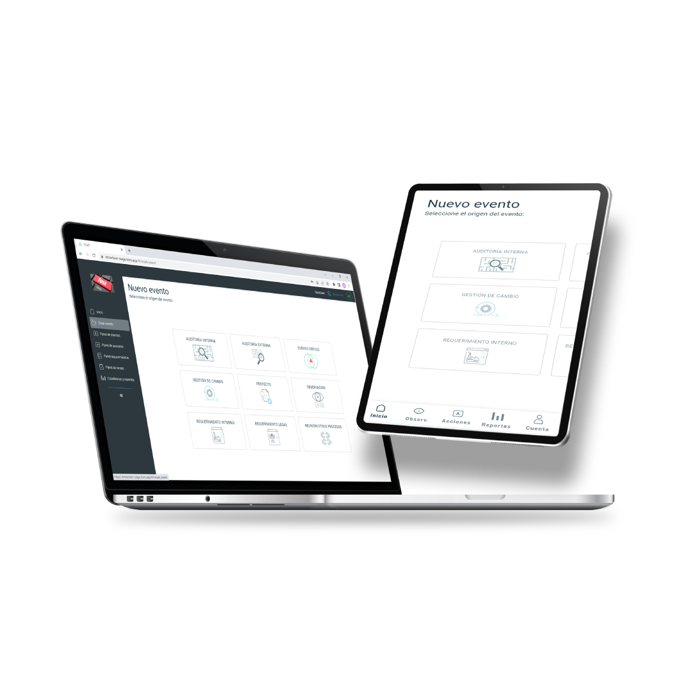

Para adquirir nuestra licencia deberá contratar el servicio que incluye:
- Implementación y puesta en marcha
- Mejoras y actualizaciones periódicas

F.A.Q
Preguntas frecuentes
Ninguna. TCMT se adapta al modelo SaaS (Software as a Services) siendo una aplicación 100% web a la que se accede por un dispositivo con conexión a internet y un navegador.
Todos los que la empresa considere necesarios. En TCMT® promovemos la comunicación abierta porque estamos convencidos que las mejoras y una buena gestión dependen de la confianza y participación entre los equipos de trabajo.
Sí. Tetrachem Master Tool® fue pensado para ser utilizado en múltiples establecimientos y áreas de una empresa.
TCMT® se encuentra funcionando en la nube de Amazon Web Services (AWS), líder global en Cloud Computing. Tetrachem Master Tool® realiza respaldos diarios de la información registrada. La información almacenada en la aplicación es propiedad de cada organización y puede disponer de ella cuando lo requiera.
Tiene un costo único e inicial de configuración e implementación que incluye las capacitaciones a los usuarios del sistema. Luego, una vez configurado se abona un valor mensual en concepto de la licencia que incluye soporte y las mejoras que sean necesarias.